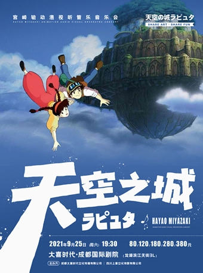

宫崎骏
我们别无选择，只能从这个流感盛行的世界出发。

天空之城

《天空之城》（天空の城ラピュタ）是日本吉卜力工作室于1986年推出的一部动画电影。《天空之城》的原作、监督、脚本和角色设定都是由宫崎骏担任，使得这部作品充分展现了宫崎骏的理念。电影中出现的空中城堡拉普达（Laputa）一般被认为是来自英国作家乔纳森·斯威夫特的知名小说《格列佛游记》中的二岛国。后来，基于这一故事，还开发了同名的网游。电影的主题曲《伴随着你》通常被称为《天空之城》，由音乐家久石让作曲，以其让人落泪的优美曲调和动人心弦的美妙音乐而闻名于世，它被改编成多种版本，成为经典的轻音乐名曲，也成为流传至今的世界名曲。
小站娘希达是传说中天空之城拉普达王族的后裔。拉普达曾是超越地上文明几千年的空中文明，但不知何故，希达的祖先离开了拉普达，抛弃了先进的科技，选择在地面上过简朴的生活。然而，有一天，几个身份不明的男子出现在她家门口......故事从希达所乘坐的飞行船遭到空中海盗袭击开始。在一片混乱中，希达被困在屋子里试图逃跑，却不慎从万米高空的飞行船上摔落下来……故事的另一个主人公是少年巴鲁，他是一名矿工技师的徒弟。某一天下班时，他发现天上有一颗闪亮的东西正在缓缓落下。他好奇地跑过去，发现竟然是一个非常可爱的女孩子，在一团蓝光的包围下从天上飘落下来了。
第二天，希达在巴鲁的房间里醒来，发现巴鲁在床上，从巴鲁那里得知自己带着飞行石从天上飘落下来。后来，在巴鲁的引领下，她看到房间里有一张拉普达的照片。这是巴鲁的父亲历经艰险才拍到的真正的天空之城，但除了斯威夫特之外，没有人相信他。于是，巴鲁发誓一定要向他人证明，世界上真的存在拉普达！敏锐的海盗妈妈很快找上门来，军方也找到了他们。接下来是一段令人眼花缭乱的追逐与逃跑，最后，两人在众目睽睽之下掉入万丈深的矿井，希达戴的飞行石再次发光，使他们安全着陆。矿井中，飞行石与井下的矿石发生了共振，老汤姆告诉他们，这《天空之城》（天空の城ラピュタ）是由日本吉卜力工作室于1986年推出的一部动画电影。它是由宫崎骏担任原作、监督、脚本和角色设计，充分展现了宫崎骏的创作理念。电影中的空中城堡拉普达（Laputa）被认为是受到英国作家乔纳森·斯威夫特的小说《格列佛游记》中描述的二岛国的影响。该电影还衍生出了同名的视频游戏。电影的主题曲《伴随着你》通常被称为《天空之城》，由音乐家久石让作曲，因其美妙动人的旋律而闻名，成为经典的轻音乐名曲，至今仍广受欢迎。
希达是一个传说中天空之城拉普达王族的后裔。拉普达曾是一个超越地上文明几千年的空中文明，但希达的祖先选择离开了拉普达，抛弃了先进的科技，选择在地面上过简朴的生活。然而，希达的生活在一天突然被几个身份不明的男子的出现打破。故事开始于希达所乘坐的飞行船遭到空中海盗袭击。在混乱中，希达试图逃跑，却不慎从万米高空的飞行船上摔落下来。另一个主人公巴鲁是一个矿工技师的学徒。有一天下班时，他发现天空中有一颗闪亮的东西缓缓落下。他好奇地走近，发现里面竟然是一个非常可爱的女孩子，她在一团蓝光的包围下从天上飘落下来。
第二天，希达在巴鲁的房间里醒来，发现巴鲁躺在床上。巴鲁告诉她，她带着一块飞行石从天上掉落下来。希达看到房间里有一张拉普达的照片，这是巴鲁的父亲历经艰险拍摄的真正天空之城的照片，但除了斯威夫特之外，没有人相信它的存在。于是，巴鲁发誓要向世界证明拉普达确实存在！敏锐的空中海盗和军方追踪着他们。接下来是一段惊险的追逐与逃跑，最后，两人掉入了一个深不见底的矿井，在众目睽睽之下，希达戴着飞行石再次发光，使他们安全着陆。矿井中，飞行石与地下的矿石发生了共振，老汤姆告诉他们这是拉普达的力量。
精彩对白
如谷之歌扎根土里与风共存
与种子越冬与乌儿歌颂
尽管有可怕的武器
操作很多可怕的机器人
离开了泥土还是活不成